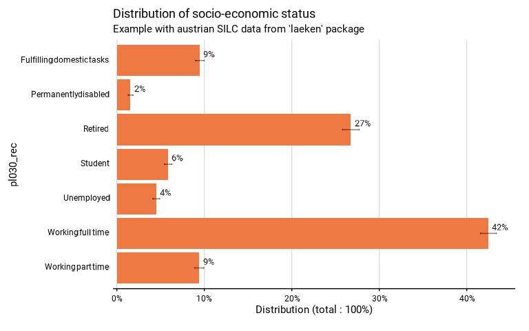

Function describe the distribution of a discrete variable from complex survey data. It produces a table and a graphic.
Usage
distrib_discrete(
data,
quali_var,
facet = NULL,
filter_exp = NULL,
...,
na.rm.facet = TRUE,
na.rm.var = TRUE,
probs = NULL,
prop_method = "beta",
reorder = FALSE,
show_ci = TRUE,
show_n = FALSE,
show_value = TRUE,
show_labs = TRUE,
scale = 100,
digits = 0,
unit = "%",
dec = ",",
pal = "sienna2",
dodge = 0.9,
font = "Roboto",
wrap_width_y = 25,
title = NULL,
subtitle = NULL,
xlab = NULL,
ylab = NULL,
lang = "fr",
caption = NULL,
theme = NULL,
export_path = NULL
)
distrib_d(...)Arguments
- data
A dataframe or an object from the survey package or an object from the srvyr package.
- quali_var
The discrete variable that is described.
- facet
A variable defining the faceting group.
- filter_exp
An expression that filters the data, preserving the design.
- ...
All options possible in as_survey_design in srvyr package.
- na.rm.facet
TRUE if you want to remove observations with NA on the facet variable. FALSE if you want to create a facet with the NA value for the facet variable. Default is TRUE.
- na.rm.var
TRUE if you want to remove observations with NA on the discrete variable. FALSE if you want to create a modality with the NA value for the discrete variable. Default is TRUE.
- probs
Vector of probabilities for H0 of the statistical test, in the correct order (will be rescaled to sum to 1). If probs = NULL, no statistical test is performed. Default is NULL.
- prop_method
Type of proportion method to use to compute confidence intervals. See svyciprop in survey package for details. Default is the beta method.
- reorder
TRUE if you want to reorder the categories according to their proportion. NA value, in case if na.rm.group = FALSE, is not included in the reorder. Default is FALSE.
- show_ci
TRUE if you want to show the error bars on the graphic. FALSE if you do not want to show the error bars. Default is TRUE.
- show_n
TRUE if you want to show on the graphic the number of individuals in the sample in each modality of quali_var. FALSE if you do not want to show this number. Default is FALSE.
- show_value
TRUE if you want to show the proportion of each category on the graphic. FALSE if you do not want to show the proportion. Default is TRUE.
- show_labs
TRUE if you want to show axes, titles and caption labels. FALSE if you do not want to show any label on axes and titles. Default is TRUE.
- scale
Denominator of the proportion. Default is 100 to interprets numbers as percentages.
- digits
Numbers of digits showed on the values labels on the graphic. Default is 0.
- unit
Unit showed in the graphic. Default is percent.
- dec
Decimal mark shown on the graphic. Default is ",".
- pal
Colour of the bars. NA bar, in case if na.rm.group = FALSE, and total bar are always in grey.
- dodge
Width of the bar, between 0 and 1. Default is 0.9.
- font
Font used in the graphic. See load_and_active_fonts() for available fonts.
- wrap_width_y
Number of characters before going to the line in the labels of the categories. Default is 25.
- title
Title of the graphic.
- subtitle
Subtitle of the graphic.
- xlab
X label on the graphic. As coord_flip() is used in the graphic, xlab refers to the X label on the graphic, after the coord_flip(), and not to the x variable in the data. If xlab = NULL, X label on the graphic will be "Distribution (total : 100 percent)". To show no X label, use xlab = "".
- ylab
Y label on the graphic. As coord_flip() is used in the graphic, ylab refers to the Y label on the graphic, after the coord_flip(), and not to the Y variable in the data. If ylab = NULL, Y label on the graphic will be quali_var. To show no Y label, use ylab = "".
- lang
The language of the indications on the chart. Possibilities: "fr", "nl", "en". Default is "fr".
- caption
Caption in the graphic.
- theme
Theme od te graphic. IWEPS adds y axis lines and ticks.
- export_path
Path to export the results in an xlsx file. The file includes three sheets : the table, the graphic and the statistical test (if probs is not NULL).
Examples
# Loading of data
data(eusilc, package = "laeken")
# Recoding eusilc$pl030 into eusilc$pl030_rec
eusilc$pl030_rec <- NA
eusilc$pl030_rec[eusilc$pl030 == "1"] <- "Working full time"
eusilc$pl030_rec[eusilc$pl030 == "2"] <- "Working part time"
eusilc$pl030_rec[eusilc$pl030 == "3"] <- "Unemployed"
eusilc$pl030_rec[eusilc$pl030 == "4"] <- "Student"
eusilc$pl030_rec[eusilc$pl030 == "5"] <- "Retired"
eusilc$pl030_rec[eusilc$pl030 == "6"] <- "Permanently disabled"
eusilc$pl030_rec[eusilc$pl030 == "7"] <- "Fulfilling domestic tasks"
# Computation, taking sample design into account
eusilc_dist_group_d <- distrib_d(
eusilc,
pl030_rec,
strata = db040,
ids = db030,
weight = rb050,
title = "Distribution of socio-economic status",
subtitle = "Example with austrian SILC data from 'laeken' package"
)
#> Input: data.frame
#> Sampling design -> ids: db030, strata: db040, weights: rb050
# Results in graph form
eusilc_dist_group_d$graph

# Results in table format
eusilc_dist_group_d$tab
#> # A tibble: 7 × 8
#> pl030_rec prop prop_low prop_upp n_sample n_weighted n_weighted_low
#> <fct> <dbl> <dbl> <dbl> <int> <dbl> <dbl>
#> 1 Fulfilling domest… 0.0948 0.0899 0.0998 1207 640311. 605978.
#> 2 Permanently disab… 0.0155 0.0129 0.0186 178 104930. 85796.
#> 3 Retired 0.267 0.258 0.277 3146 1806954. 1746273.
#> 4 Student 0.0586 0.0544 0.0630 736 395829. 365532.
#> 5 Unemployed 0.0449 0.0411 0.0489 518 303252. 276953.
#> 6 Working full time 0.425 0.416 0.434 5162 2869868. 2797833.
#> 7 Working part time 0.0941 0.0890 0.0995 1160 636121. 600709.
#> # ℹ 1 more variable: n_weighted_upp <dbl>